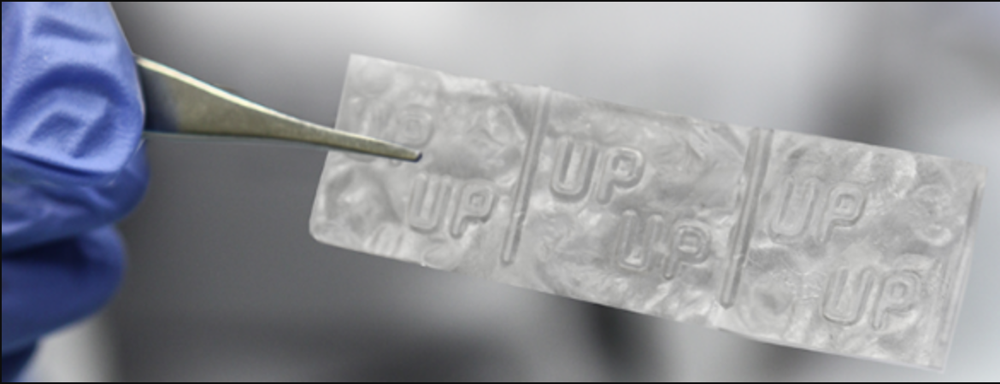

About Me
Hello! I'm a third year student studying at the Georgia Institute of Technology. There, I'm pursuing a BS in Biomedical Engineering as well as a minor in Computer Science with a concentration in Artfificial Intelligence. In my free time I enjoy hiking & backpacking, scuba diving, rock climbing, running, and even white water rafting when I get the chance. I summary, I love to explore the world around me whether that be science or nature.
Download Resume


Tissue Engineering
Image Source: http://www.annualreports.com/Company/mimedx-group-inc
During my internship at MiMedx the summer of 2017, I primarily studied EpiFix products and polyhydramniotic amniotic fluid. In my work with EpiFix, a tissue allograft product, I characterized the elution of growth factors and cytokines in both the micronized and membranous forms in various eluents for use in competitive analysis. Further, I evaluated the presence of anti-microbial peptides in MiMedx products to increase understanding of product immunogenic properties. In my work with amniotic fluid (AF) and its derived products, I evaluated the differences between normal AF and polyhydramniotic AF to determine the feasibility of its use in future products. Further details of my work are proprietary.
Febrile Seizure Detection

class="text-uppercase"> Background
Febrile seizures are a medical phenomenon characterized by rapid, involuntary muscle contractions in patients experiencing a fever. Most common in infants between the age of 6 months to three years of age, data from the Center for Disease Control and Prevention predicts that there are 80,000 to 200,000 incidents in the United States alone of febrile seizures in infants anually. Currently, there are no portable devices on the market with the capability to detect febrile seizures and protect against their consequences. My sophomore design team and I thus sought to create a device which would meet this need.
Device Design
Our device is designed as a beanie made from breathable fabric, onto which active electrodes are inkjet printed onto an interior elastic headband componenent. These electrodes continuously measure EEG data from the wearer and feed it into a processing unit. If pre-seizure brain state features are detected, this processing unit will trigger inflation of the protective cushions via release of C02 from a canister trigger valve system.
Detection Algorithm
Our algorithm uses recorded data from a Physionet database of patients suffering from seizures that we fed in as if in real time. Foremost, we preprocessed the data to remove noise due to the AC supply and biological artificts using a Butterworth IIR filter and a moving average window, respectively. We determined features and analyzed the data in ten minute windows by extracting both gamma1 and gamma3 frequency bands from the signal using bandpass filters at 30 – 50 Hz and 70 – 90 Hz and then comparing the magnitude of change in gamma1 to gamma3 spectral power ratio to a known value to map the time-period to either a pre-seizure or normal brain state label.
Protective Cushion
First, we determined a threshold value for maximum acceptable adult head deceleration by analyzing metadata collected by the International Brain Injury Association concerning impact tests of adult heads against a rigid wall. After finding that 50gs corresponds to a "no injury" label on the Abbreviated Injury Scale, we then sought to relate this value to infants based on their relative skull strength. By analyzing three studies which utilized three point bending tests, tensile tests, and drop tests on either infant or adult cadaver specimens to characterize the strength profile of their respective skulls we found that an infant skull can withstand 1/8 the force of an adult skull, and thus arrived at a value of 6.25gs of maximum force. Then we tested various materials and sizes of cushion with an infant head model to determine an ideal design of a cushion 7inches in radius after inflation and made from a permeable fabric to allow decceleration.
Spatiotemporal Pattern Detection

Background
The aim of the Keilholz lab is to gain understanding of the functional network activity of the human brain in its resting state. This pursuit will eventually allow for the identification of common alterations to this functional network that occur in pathogenic brain states. Over the course of this semester, I contributed to this mission by writing an algorithm which uses machine learning techniques to extract spatiotemporal patterns of functional network activity from fMRI scans of non-pathogenic human brains in the resting state.
To begin this project, I elected to use a clustering algorithm to group windows of fMRI scans with similar frequency distributions into clusters to identify patterns over time which are conserved throughout regions of interest in the brain as well as multiple resting state brain scans.
Data Preprocessing
All the data used for this research project was foremost preprocessed to remove noise artifacts. As a result, all data used is in within the frequency range of 0.01 – 0.30 Hz, sampled at a frequency of 1/0.72 Hz. Each scan contains 395 time-points and lasts for approximately 5 minutes. Further, each scan can be divided into 274 regions of interest (ROI), however ROI number 255 was removed from analysis in all aspects because its signals are zero for this frequency range and thus would confound the results.
To prepare the data for use in this algorithm, it was first necessary to extract time-courses from the scans. To do this, a mask was applied to the scan for each spatial region of interest to isolate signals in unique functional networks. Thereafter, the signals were averaged at each time point, resulting in 273 sinusoidal time-courses representing the neural activity at those locations over time. Thereafter, the signal was transformed from the time domain to the frequency domain to allow for the use of more straightforward analysis techniques.
Preliminary Algorithm
Initially, I decided to use a K-Means clustering algorithm on data transformed from the time domain into the spectral domain to extract patterns of recurring frequencies.
To shift the domain of the data, I used the discrete time Fourier Transform. This transformed the data into vectors of power distributions for the frequencies present in the signal at each time point. With this matrix of power distributions of the signal for different frequencies at different time points, I input these frequency values into a rudimentary k-means algorithm I wrote. This algorithm works by randomly selecting k number of data points as initial centroids and then assigning all data points to one of them based on the minimum distance. Then, the centroids move to the average of their cluster, and datum are reassigned to the closest centroid. This process repeats to minimize the average distance between datum to their assigned centroid.
Although both Fourier Transforms and k-means techniques are commonly used, both present issues for this application. The Fourier Transform uses too high a time duration to determine the frequency in the signal at that time point, thus it confounds signals that change over time. K-means weights proximal and far distances equally in calculations of data similarity and while this provides a good overall picture of the data, it is less informative about the relationships between similar data points. Further, selecting a number of centroids allows for discrepancies in results based on the number of clusters selected. In an effort to mitigate these issues, I moved forward with a new round of algorithm generation.
Final Algorithm
To improve the accuracy of the transformed signals, I switched to using a continuous wavelet transform. This is a beneficial development because this technique uses a logarithmic relationship between window length used for signal analysis and the frequency channel it is measuring. By using longer windows for lower frequency channels and shorter windows for higher frequency channels, this method preserves accuracy by using just long enough time windows to capture an accurate depiction of the signal, but short enough windows to not confound two signals that occur in close temporal proximity.
To account for edge effects of the transformation, I first mirrored the signal by concatenating the reverse of the signal at its beginning and end such that the pattern ‘abc’ would become ‘cbaabccba’. This mitigates errors downstream that estimating the power of frequencies before or after the signal as zero or any other constant would induce. After applying a continuous wavelet transform to this mirrored signal, I then trimmed the mirrored edges off to retain just the portion corresponding to the initial segment of the signal, ‘abc’ in the above example. At this point, the data is a matrix of powers of different frequencies in the sample over time. I then isolated only relevant frequencies inside the range of the preprocessed data. To make feature vectors, I concatenated the vectors for each time point vertically such that for each region of interest, the power of all frequency channels were concatenated horizontally; for each scan, all 273 regions of interest were concatenated horizontally, and between 4-16 scans were also concatenated horizontally. In different applications, I changed the window length of a feature vector by concatenating the feature vectors. For a given final feature vector, I then normalized all frequency power values within it.
At that point, it is possible to calculate the Kullback Leibler (KL) divergence between frequency vectors. KL divergence is a measure of the way two probability distributions diverge from each other, or in other words, the similarity of two feature vectors. Then, the matrix of kl divergences between feature vectors in a scan or set of scans can be used as inputs to a t- distributed stochastic neighbor embedding algorithm (t-SNE).
Similar to K-Means, t-SNE is an unsupervised machine learning algorithm used to visualize clusters in data. However unlike k-Means, t-SNE puts more emphasis on preserving relationships between similar data points rather than preserving relationships between dissimilar data, and it aids in ease of visualization of data by embedding high dimensional data into two or three dimensions while preserving relationships by minimizing the KL divergence between probability distributions of data in its initial embedding and the mapped dimension. This feature decreases potential for artificially imposed relationships between data. To build this algorithm, I adapted the procedure outlined in the journal article “Mapping the stereotyped behavior of freely moving fruit flies” by Gordon J. Berman, Daniel M. Choi, William Bialek, and Joshua W. Shaevitz. Thus far, this algorithm has been used to create a training data set which presents potential patterns in the brain scans used to make it.
Moving Forward
After running this manipulated fMRI data through this algorithm, the output is a two dimensional plot representation of the data, with clusters representing groups of similar feature vectors. Currently, I am working to confirm these patterns and map them to their form in fmri scans so that in future scans, deviations from these patterns can be used as markers for brain pathology.